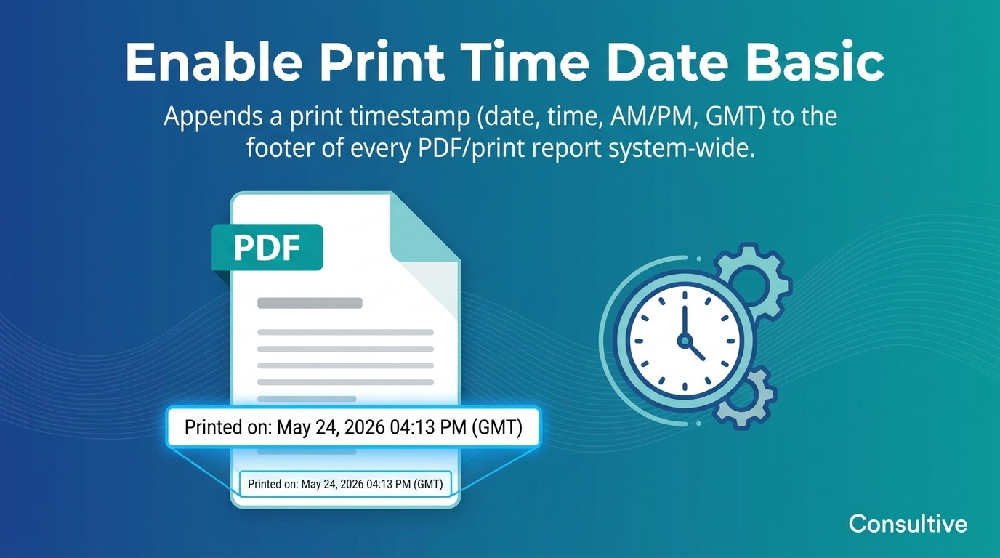
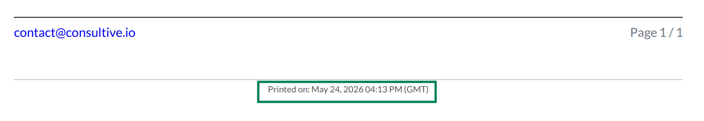

Install once. Every PDF or printed report in Odoo will automatically show a "Printed on: Month DD, YYYY HH:MM AM/PM (GMT)" timestamp in the footer — system-wide, on all four built-in report layouts, with zero configuration and zero maintenance. No settings, no toggles, no per-model setup.
|
🗓
Automatic Print Timestamp
Every PDF or printed report gets a "Printed on" footer timestamp, generated server-side at the exact moment of printing.
|
🌏
Always GMT / UTC
Timestamp is always expressed in GMT — unambiguous regardless of server time zone or user locale.
|
📄
All Four Report Layouts
Covers all built-in Odoo layouts: Standard, Striped, Boxed, and Bold — every report, every template.
|
|
⚫
Community & Enterprise
Compatible with both Odoo Community and Enterprise editions — no edition-specific differences.
|
⚡
Zero Configuration
Install and it works immediately — no settings, no toggles, no per-model setup required.
|
💪
Truly Lightweight
No new database tables, no Python models, no settings screens — pure QWeb template inheritance only.
|
The timestamp appears at the very bottom of every PDF footer in the format Printed on: May 24, 2025 02:15 PM (GMT). It is generated server-side at the exact moment of printing — always accurate, always consistent, no manual effort. Works on Sale Orders, Invoices, Purchase Orders, Delivery Notes, and every other printable report in Odoo.

Clean "Printed on" timestamp in the PDF footer — server-generated at print time, always in GMT.
|
1
|
Install from the Apps menu
Search for "Enable Print Time Date" and install. No upgrade or restart needed — it's active immediately.
|
|
2
|
Open any record and print to PDF
Use the Print or Export to PDF button on any record anywhere in Odoo — Sale Order, Invoice, PO, Delivery Note, anything.
|
|
3
|
Timestamp appears in the footer
The footer now shows Printed on: May 24, 2025 02:15 PM (GMT) — exact moment, always GMT.
|
|
4
|
Works on every layout, automatically
Standard, Striped, Boxed, Bold — all four Odoo report layouts are covered. No per-report or per-model action needed.
|
We specialize in custom Odoo development, implementation, and business process consulting — building modules that solve real operational problems, thoroughly tested and ready for production.
| 🌐 consultive.io | | | ✉ contact@consultive.io | | | 📞 +880 1711 751571 |